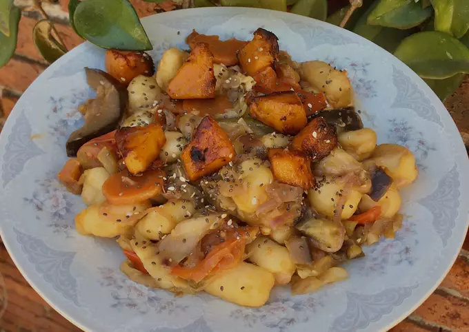

- Ingredientes:
- 7 raciones
- 1/2 calabacín
- 2 cebollas chicas
- 1 morrón
- 2 zanahorias
- 2 dientes ajo
- 2 zapallitos
- 1 berenjena
- 1 puerro
- Hojas repollo
- 10 tomates perita
- 100 grs nueces
- Chorro salsa de soja
- Pasta de su preferencia (yo usé 1 kg de ñoquis)
- Cortar el calabacín en cubitos y cocinarlo al horno o a la sartén con un chorro de aceite.
- Cortar las zanahorias en rodajas y el resto de las verduras (morrón, repollo, zapallito, puerro, berenjena) en tiras largas y finas como las fotos lo muestran, y el ajo en cubitos. Los tomates aún no los precisamos.
- En una sartén o wok con aceite caliente poner las zanahorias y 2 minutos después el morrón y la cebolla. Una vez que la cebolla esté transparente y el morrón y la zanahoria blandos, agregan el ajo, el puerro y el repollo. Cuando todo esté como en la foto (unos 10 minutos después) agregan el zapallito y la berenjena. Es importante que revuelvan constantemente para que las verduras no se quemen.
- Cuando todo esté hecho, cortan los tomates a la mitad y en una sartén con un chorro de aceite dejan grillar unos cinco minutos. Luego, los agregan al wok de las verduras.
- Agregan la salsa de soja y dejan tapado durante cinco minutos para que los sabores se concentren.
- Cuando apaguen el fuego de la hornalla donde está el wok cortan las nueces en pedacitos y las agregan al wok junto al calabacín, revolviendo todo.
- En una olla aparte, ponen agua y cuando hierva agregan las pastas de su preferencia, yo usé 1 kg de ñoquis.
- Cuando la pasta esté hecha la cuelan y agregan al wok de las verduras para que los sabores se mezclen.
- Emplatar y disfrutar! Yo agregué algunas semillas por arriba. Espero sus fotos de cuando lo hagan.